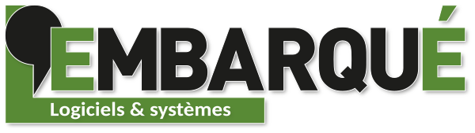

Un système embarqué est un système électronique et informatique autonom qui réalise en temps réel une tâche précise au sein de l'appareil auquel il est intégré. Les systèmes embarqués sont présents dans notre électroménager, dans les transports ou encore dans les IoT.
Pour réaliser ma veille technologique j'ai utilisé Google Alert ainsi qu'un site spécialisé : lembarque.com
